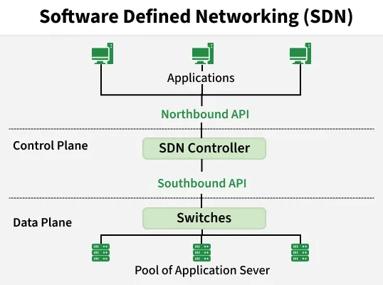
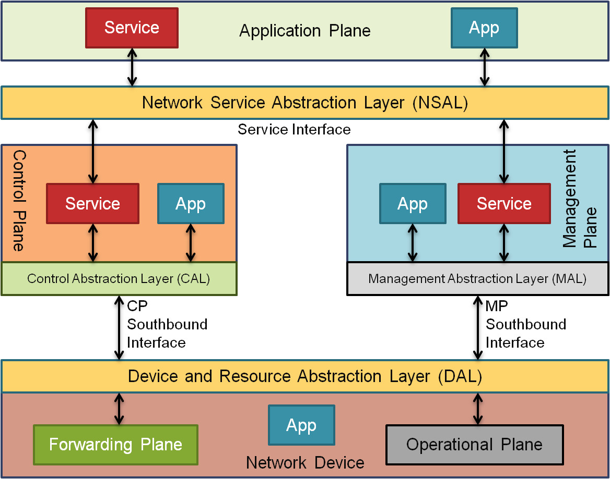
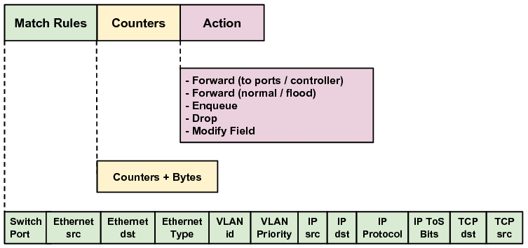
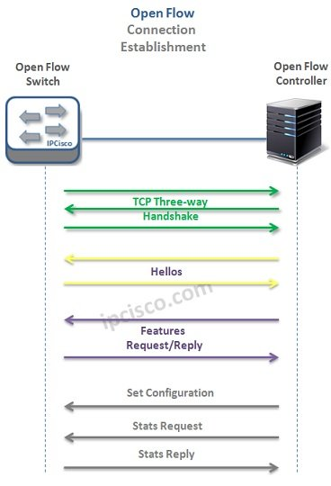

1. Introdução
Definição
Software-Defined Networking (SDN), ou Redes Definidas por Software, é uma abordagem para arquitetura de rede onde o controle da rede é separado do hardware físico subjacente e centralizado em um elemento lógico chamado controlador.
Como surgiu?
O conceito de SDN surgiu de pesquisas acadêmicas na Universidade de Stanford e na UC Berkeley por volta de 2008 (com o projeto Ethane e o protocolo OpenFlow). A motivação principal foi a necessidade de simplificar o gerenciamento de rede e permitir a inovação e o dinamismo que os data centers e a computação em nuvem exigiam, algo impossível de alcançar com as redes tradicionais rígidas.
2. Fundamentação Teórica
Rede Tradicional x SDN
- Rede Tradicional: O plano de controle (tomada de decisão) e o plano de encaminhamento (envio de pacotes) estão acoplados dentro do próprio dispositivo de hardware (switches/roteadores). O gerenciamento é descentralizado e feito dispositivo por dispositivo.
- SDN: Separa o plano de controle do plano de encaminhamento. O controle é centralizado em um software (controlador SDN), permitindo a programação da rede de forma dinâmica e automatizada.
Desafios
Transicionar de um modelo tradicional para SDN envolve quebra de paradigmas organizacionais, necessidade de requalificação de equipes, custos de migração, garantia de interoperabilidade entre equipamentos legados e novos sistemas, além de preocupações com a segurança da centralização do controle.
3. Arquitetura
Inicialmente, a visão que tinha sobre a SDN é que sua arquitetura podia ser subdividida em três camadas: aplicação, controle e dados.
A comunicação entre essas camadas ocorre por meio de duas interfaces principais:
- Northbound API: Responsável pela comunicação entre o Plano de Aplicação e o Plano de Controle.
- Southbound API: Responsável por interligar o Plano de Controle ao Plano de Dados.

Esse modelo evidencia o princípio central da SDN: a separação física e lógica entre os planos de controle e de dados. Nela, o controlador SDN (SDN Controller) assume a inteligência e as decisões de encaminhamento, enquanto os switches operam exclusivamente no plano de dados.
O controlador mantém uma visão lógica centralizada de toda a topologia da rede, o que simplifica o encaminhamento, o cálculo de rotas e a deteção de falhas.
Ao contrário das redes tradicionais, cujos switches e roteadores realizam o encaminhamento com base em prefixos IP de destino, os dispositivos em redes SDN utilizam tabelas de fluxo (flow tables), permitindo decisões de encaminhamento refinadas e programáveis baseadas em múltiplos campos do cabeçalho (Match-Action).
Os switches deixam de tomar decisões complexas de roteamento autonomamente. Eles limitam-se a consultar as suas tabelas de fluxo (flow tables) e executar as ações instruídas pelo controlador (por exemplo: encaminhar pela porta X, descartar pacote, alterar cabeçalho).
A partir da RFC 7426, foi proposta uma nova arquitetura subdividida em cinco planos: aplicação, controle, gerenciamento, encaminhamento e operacional.

Application Plane (Plano de Aplicação)
O plano onde residem as aplicações e os serviços que definem o comportamento da rede. Contém as aplicações e serviços de rede (como firewalls, roteamento, balanceadores de carga) que comunicam suas necessidades ao controlador.
Esse plano é essencial para tornar a SDN programável. Por meio dele, as aplicações de negócio interagem com o controlador de forma abstrata, sem precisar conhecer os detalhes internos do plano de controle ou da infraestrutura física da rede.
Control Plane (Plano de Controle)
É o "cérebro" da rede, centrado na figura do controlador SDN. Ele mantém a topologia lógica em tempo real (links ativos, latência atual, portas conectadas, largura de banda disponível) para calcular o menor caminho ou a melhor rota dinamicamente. O controlador toma as decisões inteligentes de sinalização, decide o caminho ponta a ponta e instala as instruções (flows) nos comutadores do Plano de Encaminhamento.
Management Plane (Plano de Gerenciamento)
O plano de gerenciamento realiza a configuração de base do dispositivo: define interfaces (estado, velocidade, endereçamento), cria bridges e associa portas a elas, configura VLANs, habilita protocolos auxiliares (SSH, NETCONF, SNMP, LLDP, NTP) e estabelece as políticas de acesso e autenticação (usuários, perfis, certificados TLS). Também habilita o agente OpenFlow, informando o endereço do controlador, a versão do protocolo e o modo de falha. Essa configuração é relativamente estática e prepara o equipamento para que o plano de controle passe a programar o encaminhamento.
O plano de gerenciamento é responsável pelas políticas de acesso administrativo aos dispositivos, como autenticação de usuários, perfis de autorização, ACLs na interface de gerenciamento e provisionamento de credenciais e certificados TLS. Já a proteção do canal OpenFlow (autenticação mútua) e das APIs northbound é aplicada pelos planos de controle e de aplicação, enquanto as políticas de tráfego da rede são implementadas por regras de fluxo no plano de encaminhamento.
Forwarding Plane / Data Plane (Plano de Encaminhamento)
Composto pelos elementos de hardware/software (switches) responsáveis apenas por aplicar as regras de encaminhamento e mover os pacotes de dados.
Ele executa as regras da Tabela de Fluxo (Flow Table) enviadas pelo controle. Ele apenas encaminha, altera cabeçalhos ou descarta pacotes no hardware.
Operational Plane (Plano Operacional)
Ele gerencia o estado das portas, disponibilidade de memória e recursos de hardware do próprio dispositivo.
NSAL — Network Services Abstraction Layer (Camada de Abstração de Serviços de Rede)
Oferece uma abstração unificada dos serviços e recursos disponibilizados pelos planos subjacentes, servindo de ponte para as aplicações e serviços finais (Service e App).
Fornece às aplicações de alto nível um ponto de acesso genérico e simplificado para programar, orquestrar e consumir os serviços de rede, sem ter de lidar diretamente com a complexidade do controlo interno da rede.
DAL — Device and Resource Abstraction Layer (Camada de Abstração de Dispositivos e Recursos)
Atua como uma camada intermédia de abstração dos recursos físicos ou virtuais do hardware/dispositivo de rede.
Isola as especificidades de hardware do dispositivo, permitindo que os planos de controle e de gestão interajam com os recursos da rede de forma padronizada e independente de fabricante.
CAL — Control Abstraction Layer (Camada de Abstração de Controle)
É a camada que abstrai os recursos de encaminhamento do dispositivo para o plano de controle. Por meio dela, o controlador programa o comportamento de encaminhamento (tabelas de fluxo, grupos, medidores) sem depender do hardware específico de cada fabricante. Corresponde à interface southbound do plano de controle, e é nela que atua o protocolo OpenFlow, usado para instalar regras, receber Packet-In e Port-Status e consultar estatísticas.
MAL — Management Abstraction Layer (Camada de Abstração de Gerenciamento)
É a camada que abstrai os recursos do dispositivo para o plano de gerenciamento. Por meio dela, o gerenciamento provisiona, configura e supervisiona o equipamento, acessando tanto sua configuração quanto o estado mantido no plano operacional. Corresponde à interface southbound do plano de gerenciamento, e é nela que atuam protocolos como o NETCONF, o OVSDB e o SNMP.
4. Protocolos e Tecnologias da SDN
CP e MP Southbound Interfaces (Interfaces Sul)
As interfaces Southbound conectam o Plano de Controle (CP) e o Plano de Gerenciamento (MP) aos dispositivos do plano de dados. Exemplos incluem o OpenFlow, NETCONF, SNMP e OVSDB.
OpenFlow
O OpenFlow é o primeiro e mais amplamente adotado protocolo padronizado de comunicação em SDN, ele atua na interface CP Southbound. Ele permite que o controlador comande diretamente as tabelas de fluxo dos switches do plano de dados.
O protocolo opera através de um Canal Seguro, por meior de uma conexão TCP/TLS, estabelecido entre o Controlador SDN e os comutadores OpenFlow, utilizando principalmente os seguintes mecanismos:
- Tabelas de Fluxo (Flow Tables): O OpenFlow define que o encaminhamento de pacotes não é mais baseado apenas em endereços IP tradicionais ou portas VLAN fixas, mas sim em regras de fluxo compostas por correspondências (match fields), contadores e ações.
- Mensagens Hello (OFPT_HELLO): Trocada imediatamente após a conexão TCP/TLS ser estabelecida. Serve para os dispositivos negociarem a versão mais alta do protocolo suportada por ambos.
- Mensagens Features (OFPT_FEATURES_REQUEST / REPLY): O controlador solicita os recursos básicos do switch (como número de tabelas e portas suportadas).
- Mensagens Packet-Out (OFPT_PACKET_OUT): O controlador envia um pacote de rede bruto para o switch e ordena que ele o injete na rede por uma porta específica.
- Mensagens Flow Removed (OFPT_FLOW_REMOVED): Informa ao controlador que uma regra de fluxo expirou (por idle timeout ou hard timeout) ou foi removida pelo switch.
- Mensagens Port Status (OFPT_PORT_STATUS): Notifica o controlador sobre mudanças físicas nas interfaces do switch (ex: um cabo foi desconectado e a porta ficou down).
- Mensagens Status / Multipart (OFPT_STATS_REQUEST/ REPLY, OFPT_MULTIPART_REQUEST / REPLY): Solicita estatísticas detalhadas ao switch (ex: contadores de pacotes por fluxo, tráfego por porta).
- Mensagens Echo (OFPT_ECHO_REQUEST / REPLY) Mensagens de Keep-Alive (ping) para monitorar a saúde do canal de controle, medir latência e garantir que o outro lado continua ativo.
- Mensagens Packet-In (OFPT_PACKET_IN): Quando um pacote chega a um switch e não encontra nenhuma regra correspondente na sua tabela local (flow miss), o switch encapsula esse pacote e o envia para o controlador via OpenFlow para que este decida o que fazer com ele.
- Mensagens Flow-Mod (OFPT_FLOW_MOD): Após analisar o pacote recebido, o controlador calcula a rota ou política de segurança e envia uma mensagem OpenFlow de modificação de fluxo para instalar a regra diretamente na memória rápida (TCAM) do switch. A partir daí, os pacotes seguintes da mesma sessão são tratados diretamente no hardware em velocidade máxima.
- Mensagens Configuration (OFPT_SET_CONFIG / GET_CONFIG): Define ou consulta parâmetros operacionais no switch (ex: fragmentação de pacotes).

Fornece ao controlador uma visibilidade completa da topologia da rede e do estado dos fluxos, permitindo otimizações complexas de engenharia de tráfego.
Facilita testes de novos algoritmos de roteamento, balanceamento de carga e políticas de segurança diretamente via software, sem a necessidade de atualizar o firmware físico de cada switch da rede.
SNMP
O SNMP (Simple Network Management Protocol) é o protocolo de gerenciamento mais antigo e mais difundido em redes. Seu modelo é composto por três elementos: o gerente (NMS, sistema de gerência da rede), o agente (software executado no dispositivo) e a MIB (Management Information Base), uma base hierárquica de objetos que descreve o que pode ser consultado, como status de interfaces, contadores de pacotes, uso de CPU e memória. Cada objeto é identificado por um OID, um identificador numérico em árvore.
As principais operações do SNMP:
- Get (Gerente → Agente) : Lê o valor de um ou mais objetos da MIB, identificados pelo OID.
- GetNext (Gerente → Agente) : Lê o próximo objeto da MIB, permitindo percorrer a árvore (walk).
- GetBulk (Gerente → Agente) : Lê grandes blocos de dados em uma única requisição. Não tem na versão v1.
- Set (Gerente → Agente) : Altera o valor de um objeto da MIB (escrita).
- Response (Agente → Gerente) : Responde às operações Get, GetNext, GetBulk e Set.
- Trap (Agente → Gerente) : Notificação espontânea de evento (ex.: linkDown), sem confirmação.
- Inform (Agente → Gerente) : Notificação com confirmação de recebimento pelo gerente. Não tem na versão v1.
O SNMP evoluiu em três versões. As versões 1 e 2c autenticam apenas por uma string de comunidade, enviada sem criptografia, o que as torna frágeis. A versão 3 introduziu autenticação de usuários, integridade e criptografia, sendo a única recomendada atualmente. O transporte é feito sobre UDP, nas portas 161 (consultas) e 162 (traps).
Sua principal aplicação é o monitoramento, por meio de polling periódico de contadores e do recebimento de traps. Embora tenha operação de escrita, ela é pouco usada para configuração, por causa da ausência de transações e do histórico de segurança fraca. Suas vantagens são a ampla compatibilidade e a leveza; suas limitações são a modelagem de dados pouco estruturada e a baixa adequação à configuração em larga escala.
NETCONF
O NETCONF (Network Configuration Protocol, RFC 6241) foi criado para suprir as limitações do SNMP e da CLI na configuração de dispositivos de rede. Ele segue o modelo cliente-servidor, em que o gerente (cliente) se comunica com o agente (servidor) no dispositivo, normalmente sobre SSH, na porta 830, o que garante autenticação, integridade e criptografia das mensagens. As mensagens são trocadas em XML, por meio de chamadas RPC, e a estrutura dos dados é descrita por modelos YANG, que tornam a configuração padronizada e independente de fabricante.
Diferentemente do OpenFlow, que atua na programação do encaminhamento de pacotes, o NETCONF foi projetado para configurar, instalar e atualizar o estado e as políticas dos dispositivos de forma programática. E, diferentemente do SNMP, voltado principalmente ao monitoramento, o NETCONF tem foco na configuração, embora também execute operações de leitura de estado e monitoramento.
Em SDN, o NETCONF é normalmente usado para habilitar o OpenFlow e informar o endereço do controlador aos switches. Ele também protege o acesso de gerenciamento aos dispositivos, por meio de SSH e NACM, e pode provisionar as credenciais usadas na proteção do canal de controle.
Enquanto o OpenFlow realiza a comunicação entre o plano de controle e o plano de encaminhamento (dados), o NETCONF é utilizado para a comunicação entre o plano de gerenciamento e o dispositivo, acessando o estado mantido no plano operacional. Essa comunicação ocorre na interface southbound do plano de gerenciamento (MAL).
O NETCONF trabalha em conjunto estrito com a linguagem de modelagem YANG. Isso significa que o controlador não envia comandos arbitrários de linha de comando (CLI), mas estruturas de dados bem definidas, organizadas em árvores hierárquicas e codificadas em XML (ou JSON, em extensões como o RESTCONF).
As principais operações do NETCONF:
- <get> : Lê a configuração e o estado operacional do dispositivo.
- <get-config> : Lê somente a configuração de um datastore.
- <edit-config> : Altera a configuração de um datastore.
- <copy-config> : Copia um datastore inteiro para outro.
- <delete-config> : Apaga um datastore.
- <lock> / <unlock> : Bloqueia e libera um datastore para evitar alterações concorrentes.
- <validate> : Verifica se uma configuração é válida antes de aplicá-la.
- <commit> : Aplica a configuração candidate ao datastore running.
- <discard-changes> : Descarta as alterações pendentes no datastore candidate.
- <close-session> : Encerra a sessão de forma ordenada.
- <kill-session> : Força o encerramento de outra sessão.
O NETCONF introduz o conceito de bases de dados de configuração distintas nos equipamentos, tais como:
- Running: A configuração atualmente ativa no dispositivo.
- Candidate: Um espaço de rascunho onde o controlador pode testar e preparar alterações antes de aplicá-las.
- Startup: A configuração que será carregada quando o dispositivo for reiniciado.
Seu grande diferencial é o suporte a transações: a configuração pode ser validada, aplicada de forma atômica e revertida (rollback) em caso de erro. O NETCONF também separa a configuração do estado operacional e oferece controle de acesso por usuário e por operação (NACM).
Além disso, suporta mecanismos de subscrição (Event Notifications, RFC 5277), que permitem ao dispositivo informar ativamente falhas, mudanças de estado ou alarmes, como a alteração do estado de uma interface.
Suas limitações são o custo maior de processamento do XML e a dependência de que o equipamento tenha modelos YANG adequados, razão pela qual é menos usado para telemetria intensiva.
Northbound Interface
A interface Northbound oferece a comunicação entre os planos de controle e gerenciamento e o plano de aplicação.
Diferente da interface Southbound (que possui padrões consolidados de mercado como o OpenFlow), a interface Northbound na RFC 7426 e no ecossistema SDN é predominantemente baseada em APIs e modelos de dados orientados a serviços. Os principais padrões utilizados incluem:
- REST / RESTful APIs (HTTP): O padrão mais difundido na indústria para a interface Northbound. Permite que as aplicações comuniquem com o controlador SDN utilizando requisições HTTP (GET, POST, PUT, DELETE) e payloads em JSON ou XML.
- gRPC / Protocol Buffers: Utilizado em arquiteturas modernas de SDN de alto desempenho. O gRPC oferece comunicação bidirecional rápida baseada em HTTP/2 e serialização eficiente, sendo ideal para streaming de telemetria e controle em tempo real.
Open vSwitch(OVS)
O Open vSwitch é o principal switch utilizado dentro da arquitetura da SDN para redes virtuais.
O Open vSwitch é um switch virtual multicamada (multilayer virtual switch) de código aberto licenciado sob a licença Apache 2.0. Ele foi projetado para operar em ambientes de virtualização (como KVM, Xen e Proxmox), permitindo gerenciar o tráfego de rede entre máquinas virtuais (VMs) e containers dentro de um mesmo host físico ou entre múltiplos hosts por meio de túneis virtuais.
O OVS divide sua inteligência e processamento de pacotes em duas partes principais para otimizar o desempenho:
- Fast Path (Caminho Rápido - Kernel Space): Onde a grande maioria dos pacotes é processada. Se o OVS encontra uma regra de fluxo (flow) já conhecida no cache do kernel (ou via DPDK em espaço de usuário), ele encaminha o pacote instantaneamente com altíssima performance.
- Slow Path (Caminho Lento - User Space): Composto por daemons como o ovs-vswitchd. Quando um pacote chega e não se encaixa em nenhuma regra existente no cache do kernel, ele é enviado para o user space. Lá, o OVS decide o que fazer (consultando suas tabelas locais ou um controlador SDN externo) e injeta uma nova regra de fluxo no fast path para que os próximos pacotes semelhantes passem direto.
Vantagens:
- Programabilidade Avançada: Suporte nativo a protocolos de gerenciamento e automação (OpenFlow, OVSDB, NetFlow, sFlow).
- Virtualização de Rede Avançada: Suporte nativo a encapsulamentos de túnel complexos exigidos em nuvens modernas (VXLAN, GRE, Geneve).
- Alta Performance: Com o uso de aceleração via DPDK (Data Plane Development Kit) ou processamento direto no kernel, atinge taxas de transferência compatíveis com ambientes de produção de alta escala.
- Integração de Mercado: É o padrão de facto em plataformas como OpenStack e serve de base para o OVN (Open Virtual Network).
Desvantagens:
- Consumo de Recursos: Como roda em software, o OVS consome ciclos de CPU do host físico para processar o tráfego (embora o DPDK mitigue isso, ele exige mais processamento que um switch ASIC físico dedicado).
- Complexidade de Diagnóstico: Depurar problemas de perda de pacotes ou latência em ambientes altamente dinâmicos com múltiplos túneis e regras de fluxo pode ser desafiador.
OVSDB
O OVSDB (Open vSwitch Database Management Protocol, RFC 7047) é o protocolo de gerenciamento criado para configurar e supervisionar o Open vSwitch (OVS). Ele pertence ao plano de gerenciamento e atua sobre o dispositivo pela MAL, sem participar da programação das regras de fluxo, que é função do OpenFlow.
O OVS mantém suas configurações e parte do seu estado em um banco de dados chamado ovsdb-server, que segue um esquema próprio (Open_vSwitch). O protocolo permite que um cliente, como um controlador ou um sistema de orquestração, consulte e modifique esse banco remotamente. Ele é baseado em JSON-RPC e normalmente é transportado sobre TCP (porta 6640, por convenção) ou TLS, também podendo usar socket Unix localmente.
O banco é organizado em tabelas, e as principais são:
- Open_vSwitch: a tabela raiz, com a configuração global do equipamento.
- Bridge: os switches virtuais (por exemplo, br0), incluindo o DPID, a versão do OpenFlow aceita e o modo de falha (fail-secure ou fail-standalone).
- Port e Interface: as portas adicionadas às bridges e as interfaces associadas, com seus tipos (físicas, virtuais, túneis VXLAN/GRE), estados e estatísticas.
- Controller: o endereço do controlador OpenFlow (IP, porta e transporte).
- Manager: o endereço do cliente OVSDB que gerencia o banco.
- QoS e Queue: limitação de taxa e filas de tráfego.
Entre as principais operações do protocolo estão:
- transact: executa um conjunto de operações no banco (inserir, consultar, atualizar e remover linhas) de forma atômica, com suporte a transações.
- monitor: o cliente se inscreve em tabelas ou colunas e recebe notificações sempre que há alterações, como a mudança do estado de um enlace (link_state).
- list_dbs, get_schema: descobrem os bancos disponíveis e seu esquema.
- echo: verifica se a conexão continua ativa.
- lock, steal, unlock: controlam o acesso exclusivo ao banco entre clientes.
O OVSDB é a ferramenta típica para a configuração de base de um switch virtual: criar bridges e portas, informar o endereço do controlador, definir a versão do OpenFlow e o modo de falha. Com isso, prepara o switch para que ele estabeleça a conexão OpenFlow com o controlador, o que complementa o papel que o NETCONF exerce em equipamentos que o suportam. Por meio do monitoramento, o plano de gerenciamento também acompanha mudanças de estado, como a queda de uma interface.
No dia a dia, a configuração costuma ser feita pelo comando ovs-vsctl, que acessa o ovsdb-server. Controladores e plataformas de orquestração (como OpenStack, por meio do OVN ou do Neutron) podem usar o protocolo diretamente.
O OVSDB é específico para o ecossistema Open vSwitch e seu esquema, o que limita seu uso em equipamentos de outros fabricantes. Além disso, ele não programa regras de fluxo nem descobre a topologia, funções que pertencem ao OpenFlow e ao plano de controle. A segurança depende do uso de TLS e de controle de acesso, pois a conexão em TCP simples não oferece autenticação nem criptografia.
O OVSDB é o protocolo de gerenciamento do Open vSwitch: configura bridges, portas e controladores, e permite acompanhar mudanças de estado por meio de notificações. Ele cumpre, para os switches virtuais, o papel que o NETCONF cumpre em equipamentos de rede em geral, preparando o dispositivo para que o plano de controle assuma, via OpenFlow, a programação dinâmica do encaminhamento.
OVN (Open Virtual Network)
O OVN é um sistema de virtualização de redes, desenvolvido no ecossistema do Open vSwitch (OVS), que funciona como um controlador SDN para redes virtuais. Ele permite criar switches, roteadores, ACLs, NAT e balanceadores de carga lógicos, independentes da topologia física, e é usado principalmente em ambientes de nuvem (como o OpenStack) e em Kubernetes. Em termos da RFC 7426, seu conjunto de componentes forma o plano de controle, enquanto o Open vSwitch de cada host é o plano de encaminhamento.
O OVN é logicamente centralizado, mas fisicamente distribuído. Sua arquitetura é dividida em camadas:
- CMS (Cloud Management System): sistema externo, como o Neutron do OpenStack, que expressa a intenção do usuário (“crie esta rede, este roteador, esta regra de segurança”). Corresponde ao plano de aplicação.
- OVN Northbound DB: banco de dados que armazena a rede lógica desejada, escrita pelo CMS.
- ovn-northd: processo central que traduz a rede lógica em fluxos lógicos (logical flows).
- OVN Southbound DB: banco de dados que guarda os fluxos lógicos e o estado físico (quais hosts existem, onde cada porta está ligada).
- ovn-controller: executado em cada hipervisor, lê a Southbound DB e converte os fluxos lógicos em regras OpenFlow locais, instaladas no OVS do próprio host. Também configura o OVS pelo OVSDB e informa à Southbound DB o estado físico do host.
Entre hosts, o tráfego das redes lógicas é transportado por túneis de encapsulamento, como Geneve (padrão), VXLAN ou STT. Esses túneis carregam metadados que identificam a rede lógica e as portas de origem e destino.
O OVN oferece um conjunto de recursos voltado à virtualização de redes. Seus switches e roteadores lógicos são distribuídos, ou seja, implementados em todos os hosts, sem depender de um nó central de roteamento. As ACLs e os grupos de segurança são aplicados diretamente no Open vSwitch, e o sistema conta com NAT, DHCP e balanceamento de carga nativos. Para conectar as redes lógicas ao mundo físico, utiliza gateways e, quando necessário, integra-se a hardware por meio de switches físicos compatíveis com VTEP.
Para realizar essas funções, o OVN combina três protocolos principais. O OVSDB é usado para configurar e monitorar o Open vSwitch e para a comunicação com os bancos Northbound e Southbound. O OpenFlow é responsável por instalar as regras de encaminhamento no Open vSwitch local. Já o Geneve (padrão) ou o VXLAN fazem o encapsulamento do tráfego entre os hosts.
Entre as vantagens dessa arquitetura, destaca-se a escalabilidade: como o ovn-controller se comunica com o Open vSwitch localmente, não há milhares de conexões OpenFlow concentradas em um único controlador. Há também resiliência, pois os bancos de dados podem operar em cluster (Raft) e, caso o plano central fique indisponível, os fluxos já instalados continuam encaminhando o tráfego. O desempenho também é favorecido, já que o roteamento e as ACLs são distribuídos e executados no próprio host onde a máquina virtual está. Por fim, a integração é facilitada, uma vez que o OVN é o padrão no OpenStack moderno e está disponível em Kubernetes, por meio de soluções como Kube-OVN e OpenShift.
Por outro lado, o OVN possui limitações. Ele foi projetado para a virtualização de redes em nuvem e contêineres, e não para controlar redes físicas de campus ou WAN, cenários em que controladores como ONOS e OpenDaylight são mais utilizados. Além disso, depende do ecossistema Open vSwitch. Por fim, sua operação e seu diagnóstico são complexos, pois envolvem várias camadas de tradução: da rede lógica para os fluxos lógicos e destes para as regras OpenFlow.
NOX
O NOX foi o primeiro controlador OpenFlow e deu origem à ideia de “sistema operacional de rede” para SDN. Foi apresentado em 2008 e, depois, liberado como código aberto para a comunidade de pesquisa.
Foi desenvolvido pela Nicira Networks, empresa fundada por pesquisadores ligados a Stanford e Berkeley, em paralelo ao surgimento do OpenFlow. O artigo que o descreve, NOX: Towards an Operating System for Networks (2008), propôs que a rede tivesse uma plataforma central que oferecesse uma visão global e uma interface de programação, assim como um sistema operacional faz com o hardware de um computador.
A arquitetura do NOX foi construída em torno de um núcleo escrito em C++, sobre o qual as aplicações podiam ser desenvolvidas tanto em C++ quanto em Python, por meio de bindings. Seu funcionamento é orientado a eventos: o núcleo recebe as mensagens OpenFlow enviadas pelos switches, como Packet-In e Port-Status, converte-as em eventos e as entrega aos componentes registrados para tratá-los. Esses componentes são módulos que implementam funções como descoberta de topologia, aprendizado de hosts, roteamento, autenticação e controle de acesso. Todo o sistema roda em um processo único, que mantém a conexão OpenFlow com todos os switches e guarda a visão da rede em memória, seguindo, portanto, o modelo centralizado monolítico. O protocolo suportado era o OpenFlow 1.0.
Ao longo do tempo, o projeto deu origem a diferentes versões. O NOX clássico, o original, combinava C++ e Python. Posteriormente, surgiu o chamado “novo” NOX, uma reescrita mais enxuta, feita apenas em C++ e voltada ao desempenho. Já o POX, criado depois, é a versão em Python puro, voltada ao ensino e à prototipagem.
A importância do NOX é principalmente histórica e conceitual. Ele serviu de referência para os controladores seguintes, como POX e Ryu, e consolidou o conceito de plano de controle logicamente centralizado, que mais tarde seria formalizado pela RFC 7426. Além disso, demonstrou na prática que um software centralizado pode controlar o encaminhamento de uma rede inteira.
Por outro lado, o NOX apresenta limitações importantes. Por rodar em um único processo, tem escalabilidade e desempenho restritos. Também não oferece alta disponibilidade nativa, de modo que a queda do controlador deixa a rede sem plano de controle. Soma-se a isso o suporte exclusivo ao OpenFlow 1.0 e o fato de o projeto estar descontinuado, o que faz com que hoje tenha interesse principalmente histórico.
5. Funcionamento
Conexão entre Switch e Controlador

Inicialmente, o switch recebe o endereço IP (ou o nome de host) e a porta do controlador, configurados via CLI, OVSDB ou pelo protocolo de gerenciamento NETCONF. Com essas informações, o switch abre uma conexão TCP ou TLS com o controlador. A partir daí, toda a comunicação de controle entre os dois passa a ocorrer por meio do protocolo OpenFlow.
Switch e controlador trocam mensagens do tipo Hello para negociar a versão do OpenFlow que será utilizada. Definida a versão, o controlador envia uma mensagem Features Request para solicitar as capacidades básicas do switch, como o número de tabelas de fluxo e o identificador do equipamento na rede (DPID, Datapath ID). O DPID tem 64 bits e, por convenção, os 48 bits inferiores costumam corresponder ao endereço MAC do switch. O switch responde com os dados solicitados por meio da mensagem Features Reply. Na versão 1.0 essa resposta já inclui as portas; a partir da versão 1.3, as portas, suas velocidades e seus estados são obtidos por uma mensagem separada de descrição de portas (OFPMP_PORT_DESC).
Após, o controlador envia uma mensagem Set Config para definir parâmetros do switch, como o tamanho máximo do pacote enviado em um Packet-In, e utiliza mensagens Stats Request/Reply (Multipart no OpenFlow 1.3) para obter descrição (fabricante, modelo, software, serial), estatísticas de fluxos, de tabelas, de portas e de filas.
Em seguida, switch e controlador passam a trocar mensagens Echo periodicamente. Elas verificam se a conexão de controle continua ativa e, portanto, permitem detectar a queda do switch, do controlador ou do canal entre eles.
Construção da Topologia
O controlador cria quadros LLDP (Link Layer Discovery Protocol), que carregam o DPID e o número da porta de origem, e os encapsula em mensagens OpenFlow do tipo Packet-Out. Cada mensagem é enviada ao switch com a instrução de transmitir o quadro por uma porta específica, de modo que o LLDP chegue aos vizinhos diretamente conectados.
Ao receber o quadro, o switch vizinho consulta sua tabela de fluxos. Como o LLDP não deve ser encaminhado como tráfego comum, uma regra (pré-instalada pelo controlador ou a própria regra table-miss) determina o envio do pacote ao controlador por meio de uma mensagem Packet-In. O controlador então combina duas informações: o conteúdo do LLDP (DPID e porta de origem) e os metadados do Packet-In (DPID do switch receptor e porta de entrada). Com isso, ele identifica a existência de um enlace entre os dois switches e o registra. Esse processo se repete periodicamente, o que mantém a topologia atualizada.
O controlador mantém em memória um grafo G = (V, E), em que V representa os switches e E representa os enlaces entre eles, que podem ter pesos como latência, taxa de perda de pacotes ou capacidade. Quando chega uma nova requisição de fluxo, o controlador executa algoritmos como Dijkstra (menor caminho ou menor latência) ou CSPF (Constrained Shortest Path First), que considera restrições de largura de banda e de QoS.
Por fim, o controlador envia as regras calculadas aos switches envolvidos por meio do próprio OpenFlow, usando mensagens Flow-Mod, que instalam as entradas nas tabelas de fluxo.
Quando um pacote chega a um switch
Quando um pacote chega a um switch ele verifica se alguma das regras instaladas na Flow Table casa com o pacote em questão, caso haja mais de uma regra com prioridades diferentes ele escolhe a com maior prioridade, em cima disso temos dois cenários possíveis:
- Acerto (hit): o switch executa as instruções/ações (encaminhar, descartar, modificar cabeçalho, enviar a uma tabela de grupo ou de medidores, ir para a próxima tabela) e atualiza os contadores. O pacote segue sem envolver o controlador.
- Falha (miss): vale a entrada table-miss, que normalmente significa enviar ao controlador, no entanto pode descartar ou ir para outra tabela, caso haja múltiplas tabelas. No OpenFlow 1.0, o comportamento padrão do miss é enviar ao controlador; a partir da 1.3, a entrada table-miss precisa ser instalada explicitamente, e sem ela o pacote é descartado.
Se o pacote for enviado ao controlador, o switch o encapsula em uma mensagem Packet-In, que pode conter o pacote inteiro ou apenas os cabeçalhos (neste caso, o restante fica em um buffer local do switch, identificado por um buffer_id). O controlador calcula o caminho, envia Flow-Mod aos switches envolvidos e, em seguida, libera o pacote pendente: se ele estiver bufferizado no switch, a liberação pode ser feita no próprio Flow-Mod (referenciando o buffer_id); caso contrário, é feita por meio de um Packet-Out. Os pacotes seguintes do fluxo já casam com as regras instaladas.
Construção das tabelas de fluxo
Uma entrada de fluxo tem os seguintes campos: match fields, prioridade, contadores, instruções, timeouts (idle/hard), cookie e flags.
Para a instalação dessas entradas/regras existem três modos:
- Reativo: a regra só é instalada quando o primeiro pacote chega (PACKET_IN → FLOW_MOD). Usa pouca tabela, mas tem latência no primeiro pacote e sobrecarrega o controlador.
- Proativo: o controlador instala as regras antes do tráfego, com base na topologia e na política. Dá latência baixa, mas exige mais entradas.
- Híbrido: regras básicas proativas e o restante reativo.
As entradas expiram por idle timeout (sem tráfego) ou hard timeout. O switch pode avisar com FLOW_REMOVED. Os contadores são lidos periodicamente (STATS_REQUEST), alimentando monitoramento e engenharia de tráfego. Também existem tabelas de grupo (multicast, balanceamento, fast-failover) e tabelas de medidores (QoS/rate limiting).
Detecção de queda de enlace
O switch detecta a queda de um enlace por meio do plano operacional (por exemplo, a perda de sinal na porta) e envia uma mensagem Port-Status ao controlador. O controlador também pode perceber a queda de forma indireta, pela ausência dos quadros LLDP daquele enlace durante um período de timeout. Além de notificar o controlador via Port-Status, o dispositivo pode informar o plano de gerenciamento sobre a queda do enlace por meio de notificações NETCONF, traps SNMP ou atualizações do OVSDB. Essas notificações servem a monitoramento, alarmes e registro histórico, enquanto a reação da rede à falha (recálculo de rotas) é conduzida pelo plano de controle.
Se os switches tiverem caminhos alternativos pré-instalados (por exemplo, por meio de Fast Failover Groups), eles mudam sozinhos para o caminho de backup, sem consultar o controlador, e a recuperação ocorre na casa de dezenas de milissegundos. Em paralelo, o controlador remove o enlace da topologia e identifica os fluxos que o utilizavam. Quando não há caminho de backup, ele recalcula as rotas e envia novas mensagens Flow-Mod aos switches afetados.
Detecção de queda de roteador
O controlador percebe a queda quando a conexão de controle é encerrada (TCP finalizado) ou quando ocorre timeout das mensagens Echo. Os switches vizinhos também reportam, por meio de Port-Status, a queda das portas voltadas para o equipamento.
O controlador remove o nó e todos os seus enlaces da topologia e recalcula e reinstala as rotas afetadas. Quando o equipamento volta, ele refaz a conexão TCP, é redescoberto e reprogramado (o plano de gerenciamento pode reaplicar a configuração)
Detecção de queda do Controlador
o switch detecta por TCP encerrado ou timeout de Echo.Com isso, switches entram em modo fail-secure (mantêm as regras existentes, sem novas) ou fail-standalone (voltam a operar como switch L2 tradicional).
A mitigação é usar múltiplos controladores (papéis master/slave/equal do OpenFlow) e clusters distribuídos (ONOS, ODL).
Prevenção de Loops
Uma problemática importante em redes tradicionais é como podemos prevenir loops. O RIP não consegue evitar por completo loops e o OSPF só evita por completo loops se todos os roteadores tiverem a mesma topologia da rede.
Em SDN, o problema dos loops é mitigado de forma diferente graças à centralização e à lógica programável:
Como o controlador possui o grafo completo da rede, ele calcula caminhos acíclicos ponta a ponta antes de enviar as regras para os switches. Ele simplesmente não instala rotas que formem ciclos fechados para o mesmo fluxo de dados.
No entanto, ainda há risco de haver loops na SDN, O maior risco de loops em SDN acontece durante atualizações dinâmicas de rotas (quando o controlador tenta reencaminhar um fluxo e atualiza alguns switches antes de outros, criando temporariamente um loop de convergência). Para evitar isso, utilizam-se duas estratégias principais
- Atualizações em Duas Fases (Two-Phase Update): O controlador grava as novas regras nos switches ao longo do novo caminho com um tag/VLAN diferente. Apenas quando todos os switches intermediários possuem a nova regra, o controlador atualiza o switch de entrada (ingress switch) para começar a etiquetar os pacotes com a nova rota.
- Decremento do TTL: A proteção real para evitar que o pacote fique indefinidamente na rede é o decremento do TTL (Time to live) do datagrama.
Os loops também podem surgir do tráfego de broadcast e multicast, como o ARP. Esses quadros não têm um destino único, e por isso o controlador não calcula um caminho ponta a ponta para eles. Se fossem inundados (flooding) por todas as portas em uma topologia com ciclos, os switches os reencaminhariam indefinidamente, gerando uma tempestade de broadcast. Para evitar isso, o controlador pode inundar apenas pelas portas pertencentes a uma árvore geradora (spanning tree) da topologia, que ele calcula a partir do grafo da rede, bloqueando as portas redundantes. Outra solução é reduzir o broadcast na origem: o controlador atua como proxy ARP, respondendo diretamente às requisições de hosts já conhecidos, de modo que o quadro nem chega a circular pela rede. Em ambos os casos, o controlador usa a visão global para impor uma estrutura sem ciclos ao tráfego que não segue um caminho único.
6. Desafios e Mitigações
Ponto Único de Falha e Escalabilidade
No modelo tradicional de SDN, adota-se um controlador centralizado responsável por gerenciar as tabelas de fluxo dos switches no plano de dados. Contudo, essa arquitetura apresenta limitações críticas: além de constituir um ponto único de falha (Single Point of Failure - SPOF) — cuja indisponibilidade paralisa o encaminhamento de pacotes —, a centralização gera um gargalo de escalabilidade, dificultando o suporte a redes de grande porte com alto volume de requisições.
Com base nisso surge o controlador distribuído (Cluster) que consiste em múltiplos nós de controladores trabalhando em conjunto para gerenciar a infraestrutura.
Entre suas vantagens temos: alta disponibilidade, tolerância a falhas (resiliência) e escalabilidade geográfica. Exemplos famosos incluem o OpenDaylight e o ONOS rodando em modo cluster.
OpenDaylight(ODL)
O OpenDaylight, gerido pela Linux Foundation, é o projeto de controlador SDN open-source mais antigo e abrangente da indústria.
É uma plataforma modular extremamente flexível construída em Java (sobre o framework OSGi). O ODL funciona como uma "caixa de ferramentas": ele não impõe uma única aplicação de rede, mas fornece dezenas de módulos que você pode ativar ou desativar conforme a necessidade (suportando OpenFlow, NETCONF/YANG, BGP, OSPF, etc.).
Foco Principal: Redes de grandes empresas (Enterprise), data centers corporativos e ambientes heterogêneos que precisam integrar tecnologias tradicionais e programáveis.
Vantagens:
- Ecossistema massivo e maduro, com suporte a uma enorme variedade de protocolos Southbound.
- Extremamente flexível e personalizável para diferentes use-cases.
Desvantagem:
- Curva de aprendizado íngreme e alta complexidade de configuração devido à sua arquitetura modular pesada.
ONOS
O ONOS, também hospedado pela Linux Foundation, foi construído do zero com um foco diferente: atender às demandas de redes de operadoras de telecomunicações (Carrier-Grade e WANs de alta escala).
Foi projetado desde o início para operar em cluster distribuído, priorizando alta disponibilidade, resiliência e desempenho em tempo real. Ele trata o cluster de controladores como um único sistema operacional de rede lógico. O ONOS aposta fortemente no conceito de Intent-Based Networking (redes baseadas em intenção).
Foco Principal: Provedores de serviços de internet (ISPs), redes de longa distância (WAN), redes de acesso óptico e infraestruturas críticas onde a queda de um nó não pode derrubar a rede.
Vantagens:
- Arquitetura distribuída nativa altamente eficiente (ótima para evitar o SPOF e garantir escalabilidade)
- Excelente desempenho (throughput e latência no processamento de fluxos).
- Foco em abstrações de alto nível (Intents).
Desvantagem:
- Pode ser excessivamente complexo se implantado em redes pequenas ou ambientes que exigem apenas simplicidade monolítica.
Segurança: Criptografia (TLS/SSL)
Desafio: Interceptação do tráfego de controle entre o controlador e os switches.
Mitigação: Obrigatoriedade do uso de canais criptografados com TLS/SSL para toda comunicação no canal de controle.
Desempenho
Desafio: Gargalos no controlador devido ao grande volume de pacotes desconhecidos requerendo instrução.
Mitigação: Arquitetura de controle hierárquica, processamento de fluxos reativo/proativo e switches inteligentes com suporte a P4.
Consistência de Atualizações e Conflito entre Aplicações
Desafio: Em uma SDN várias aplicações (firewall, balanceador, roteamento, QoS) podem gerar regras ao mesmo tempo para os mesmos fluxos. Isso pode causar conflitos (ex.: o firewall bloqueia um tráfego que o balanceador tenta redirecionar) ou buracos e loops temporários quando switches são atualizados em momentos diferentes (problema já visto na seção 5).
Mitigação:
- Atualizações em duas fases (two-phase update), como descrito na seção 5, para que cada pacote seja tratado inteiramente pela configuração antiga ou inteiramente pela nova.
- Uso de prioridades e de um módulo de composição de políticas para resolver conflitos entre aplicações.
- Verificação formal de regras antes (ou logo depois) de instalá-las, com ferramentas de pesquisa como o VeriFlow, o Header Space Analysis e o NetPlumber, que detectam loops, buracos negros e violações de isolamento.
- Abordagem baseada em intenção (Intents): o operador declara "o quê" (ex.: conectividade entre A e B com 1 Gbps) e o controlador traduz isso para regras e as reconcilia automaticamente.
Migração, Interoperabilidade e Capacitação
Desafio: Poucas organizações podem trocar toda a rede de uma vez (cenário brownfield). Além disso, o OpenFlow não é suportado de forma idêntica por todos os fabricantes e a Northbound API não possui um padrão único, o que gera risco de dependência de fornecedor (vendor lock-in). Há ainda a barreira humana: equipes acostumadas com a CLI precisam aprender APIs, Python/REST, YANG e práticas de DevOps.
Mitigação:
- SDN híbrido: switches que executam, ao mesmo tempo, o plano de controle tradicional (OSPF, BGP) e o OpenFlow, permitindo migrar por etapas (ex.: começar apenas pelo data center ou por uma filial).
- Modelos de dados padronizados (YANG/NETCONF): reduzem a dependência de CLI proprietária.
- Laboratório e emulação antes da produção: ferramentas como Mininet permitem testar topologias e aplicações sem hardware (veja o exemplo prático na seção 7).
- Capacitação e cultura NetDevOps: automação, versionamento de configuração e testes contínuos.
7. Aplicações
SD-WAN (Software-Defined WAN)
Aplicação da tecnologia SDN em redes de longa distância para gerenciar dinamicamente múltiplos tipos de conexões (MPLS, Internet, 4G/5G) com menor custo e maior eficiência.
Exemplo prático: uma rede de lojas com uma matriz e 200 filiais. Cada filial tem um link MPLS (caro e estável) e um link de internet banda larga (barato). O controlador SD-WAN monitora latência, jitter e perda de cada link e aplica políticas por aplicação: voz e sistema de pagamento (PDV) seguem pelo caminho com melhor qualidade, enquanto backups e navegação usam a internet comum. Se o MPLS falhar, o tráfego crítico é movido automaticamente para a internet em segundos.
- Zero-Touch Provisioning (ZTP): o equipamento da filial é ligado, se conecta ao orquestrador e baixa sozinho sua configuração, sem técnico especializado no local.
- Roteamento por aplicação: a decisão de caminho considera o tipo de tráfego (identificado por portas, DPI ou domínio), não apenas o IP de destino.
- Segurança integrada: túneis IPsec automáticos entre filiais e segmentação por VPN/VRF.
- Exemplos de soluções comerciais: Cisco SD-WAN, VMware VeloCloud, Fortinet Secure SD-WAN.
Operadoras de Telecomunicações e Redes 5G (Telco SDN)
SDN possibilita a virtualização de funções de rede, criação de fatiamento de rede (Network Slicing) no 5G e gestão dinâmica de banda sob demanda.
Network Slicing na prática: sobre a mesma infraestrutura física, a operadora cria redes lógicas isoladas, cada uma com requisitos próprios. Os três grandes tipos de serviço do 5G são:
- eMBB (Enhanced Mobile Broadband): alta vazão, para vídeo em alta resolução e realidade aumentada.
- URLLC (Ultra-Reliable Low-Latency Communications): latência muito baixa e alta confiabilidade, para cirurgia remota, veículos autônomos e automação industrial.
- mMTC (Massive Machine-Type Communications): enorme quantidade de dispositivos de baixo consumo, para sensores e IoT.
O controlador SDN configura as rotas, a banda e as prioridades de cada fatia, e pode criar, ampliar ou remover uma fatia em minutos, conforme a demanda.
SD-RAN: a ideia de separar controle e dados também chegou à rede de acesso por rádio. Na arquitetura Open RAN, um controlador inteligente (RIC - RAN Intelligent Controller) hospeda aplicações que ajustam parâmetros de rádio, balanceiam carga entre antenas e otimizam o consumo de energia.
Datacenters
Permite automação completa do provisionamento de redes virtuais, multitenancy seguro, otimização do uso de links e facilidade no orchestration de microsserviços e contêineres.
- Virtualização de rede em nuvens (overlay): plataformas como OpenStack (Neutron com OVN/Open vSwitch) criam redes virtuais isoladas por cliente usando túneis VXLAN ou Geneve sobre a rede física, como visto na seção 4 com o OVS.
- Contêineres e Kubernetes: plugins de rede (CNI) como Calico e Cilium aplicam políticas de rede (NetworkPolicy) entre pods de forma programável.
- Microssegmentação: cada VM ou contêiner recebe regras individuais de acesso (ex.: o servidor web só pode falar com o banco de dados na porta 5432), limitando a movimentação lateral de um atacante dentro do datacenter.
- Migração de VMs sem perder a rede: quando uma VM muda de servidor, o controlador atualiza as regras para acompanhar o novo local, sem reconfigurar manualmente cada switch.
- Balanceamento de carga em fabric leaf-spine: a SDN distribui fluxos por múltiplos caminhos de mesmo custo, evitando links congestionados.
SDN x NFV
Enquanto o SDN separa o controle do encaminhamento para centralizar a inteligência, a NFV (Network Functions Virtualization) foca em virtualizar as funções de rede (como roteadores, firewalls e NATs), rodando-as em software sobre hardware genérico. São tecnologias complementares.
| Aspecto | SDN (Software-Defined Networking) | NFV (Network Functions Virtualization) |
|---|---|---|
| Foco Principal | Separação e centralização do plano de controle. | Virtualização de hardware de rede em software. |
| O que muda | Como as decisões de roteamento e fluxos são tomadas. | Onde as funções de rede rodam (de caixas físicas para VMs/Containers). |
| Principais Ferramentas | OpenFlow, ONOS, OpenDaylight, Open vSwitch. | OpenStack, KVM, Docker/Kubernetes, hypervisors. |
| Exemplos de Uso | Engenharia de tráfego, SD-WAN, automação de Data Center. | Firewalls virtuais (vFW), roteadores virtuais (vRouter), vEPC. |
| Interdependência | Funciona de forma independente (pode gerenciar switches físicos legados). | Funciona de forma independente (pode rodar funções sem um controlador SDN). |
Exemplo de uso conjunto: Service Function Chaining (SFC). O tráfego de um cliente precisa passar por uma "cadeia" de funções: firewall → IDS → NAT. Com NFV, cada função é uma máquina virtual ou contêiner rodando em servidores genéricos. Com SDN, o controlador instala as regras dinâmicas que conduzem os pacotes exatamente por essa sequência de funções, permitindo alterar a ordem ou inserir novos serviços de segurança para cada cliente apenas reprogramando os fluxos via software, sem nenhuma alteração no cabeamento físico.
8. Conclusão
A arquitetura SDN revolucionou a maneira como projetamos e operamos redes de computadores. Ao trazer a programabilidade e a automação do software para o mundo do hardware de rede, o SDN tornou-se o pilar fundamental para ecossistemas modernos como computação em nuvem, data centers de grande escala e redes 5G.
9. Perguntas
10. Referências
CISCO. Software-Defined Networking (SDN): What It Is and How It Works. Disponível em: <https://www.cisco.com/c/en/us/solutions/software-defined-networking/overview.html>. Acesso em: 19 out. 2026.
ERICKSON, D. The Beacon Openflow Controller. In: ACM SIGCOMM WORKSHOP ON HOT TOPICS IN SOFTWARE DEFINED NETWORKING (HOTSDN), 2., 2013, Verona. Proceedings... New York: ACM, 2013. p. 13-18.
GEEKSFORGEEKS. Software Defined Networking (SDN). Disponível em: <https://www.geeksforgeeks.org/computer-networks/software-defined-networking/>. Acesso em: 19 out. 2026.
HALEPLIDIS, E. Overview of RFC7426: SDN layers and architecture terminology. IEEE SDN Newsletter, set. 2017. Disponível em: <https://sdn.ieee.org/newsletter/september-2017/overview-of-rfc7426-sdn-layers-and-architecture-terminology>. Acesso em: 19 out. 2026.
INTERNET ENGINEERING TASK FORCE (IETF). RFC 1953: GZIP file format specification version 4.3. Disponível em: <https://www.rfc-editor.org/info/rfc1953>. Acesso em: 19 out. 2026.
INTERNET ENGINEERING TASK FORCE (IETF). RFC 2297: Remote Managed Client-Initiated Transfer Protocol. Disponível em: <https://www.rfc-editor.org/info/rfc2297>. Acesso em: 19 out. 2026.
INTERNET ENGINEERING TASK FORCE (IETF). RFC 7149: Software-Defined Networking: A Perspective from Within a Service Provider Environment. Disponível em: <https://www.rfc-editor.org/info/rfc7149>. Acesso em: 19 out. 2026.
INTERNET ENGINEERING TASK FORCE (IETF). RFC 7426: Software-Defined Networking (SDN): Layers and Architecture Terminology. Disponível em: <https://www.rfc-editor.org/info/rfc7426/>. Acesso em: 19 out. 2026.
KREUTZ, D. et al. Software-Defined Networking: A Comprehensive Survey. Proceedings of the IEEE, v. 103, n. 1, p. 14-76, jan. 2015. Disponível em: <https://conferences.sigcomm.org/sigcomm/2015/pdf/papers/keynote.pdf>. Acesso em: 19 out. 2026.
KUROSE, James F.; ROSS, Keith W. Redes de computadores e a internet: uma abordagem top-down. Tradução: Francisco Araújo da Costa. Revisão técnica: Wagner Zucchi. 8. ed. Porto Alegre: Bookman; São Paulo: Pearson, 2021.
SILVA, A. et al. Security in Software-Defined Networking: A survey. Security and Communication Networks, v. 2018, p. 1-22, 2018. Disponível em: <https://onlinelibrary.wiley.com/doi/abs/10.1002/sec.1737>. Acesso em: 19 out. 2026.